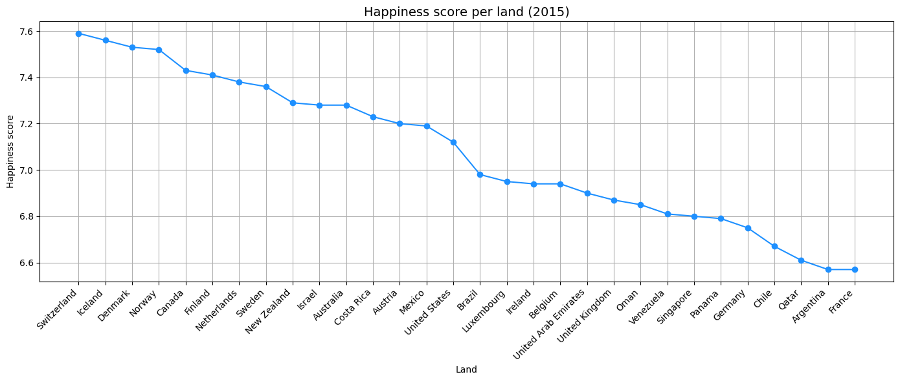

Het verhaal#
import pandas as pd
import matplotlib.pyplot as plt
import plotly.express as px
w_h = pd.read_csv('../datasets/world_happiness_2015.csv', sep=';')
w_h.head(5)
| Ranking | Country | Regional indicator | Happiness score | GDP per capita | Social support | Healthy life expectancy | Freedom to make life choices | Generosity | Perceptions of corruption | |
|---|---|---|---|---|---|---|---|---|---|---|
| 0 | 1 | Switzerland | Western Europe | 7,59 | 8,26 | 0,96 | 73 | 0,99 | 0,37 | 0,24 |
| 1 | 2 | Iceland | Western Europe | 7,56 | 7,7 | 1 | 73 | 0,94 | 0,55 | 0,74 |
| 2 | 3 | Denmark | Western Europe | 7,53 | 7,84 | 0,97 | 70 | 0,97 | 0,43 | 0,12 |
| 3 | 4 | Norway | Western Europe | 7,52 | 8,63 | 0,95 | 71 | 1 | 0,44 | 0,34 |
| 4 | 5 | Canada | North America and ANZ | 7,43 | 7,85 | 0,94 | 71 | 0,95 | 0,58 | 0,4 |
def clean_number(x):
if isinstance(x, str):
x = x.replace('.', '')
x = x.replace(',', '.')
return x
w_h['Happiness score'] = w_h['Happiness score'].apply(clean_number).astype(float)
w_h['Social support'] = w_h['Social support'].apply(clean_number).astype(float)
w_h['Healthy life expectancy'] = w_h['Healthy life expectancy'].apply(clean_number).astype(float)
w_h['Freedom to make life choices'] = w_h['Freedom to make life choices'].apply(clean_number).astype(float)
mean_happiness = w_h['Happiness score'].mean()
mean_social_support = w_h['Social support'].mean()
std_social_support = w_h['Social support'].std()
mean_healthy_life = w_h['Healthy life expectancy'].mean()
mean_freedom = w_h['Freedom to make life choices'].mean()
print(f"Gemiddelde Happiness score: {mean_happiness:.2f}")
print(f"Gemiddelde Social support: {mean_social_support:.2f} (std: {std_social_support:.2f})")
print(f"Gemiddelde Healthy life expectancy: {mean_healthy_life:.2f} jaar")
print(f"Gemiddelde Freedom to make life choices: {mean_freedom:.2f}")
Gemiddelde Happiness score: 5.38
Gemiddelde Social support: 0.71 (std: 0.19)
Gemiddelde Healthy life expectancy: 61.50 jaar
Gemiddelde Freedom to make life choices: 0.64
gemiddelde = w_h['Social support'].mean()
standaarddeviatie = w_h['Social support'].std()
print(f"Gemiddelde Social support: {gemiddelde:.2f}")
print(f"Standaarddeviatie Social support: {standaarddeviatie:.2f}")
Gemiddelde Social support: 0.71
Standaarddeviatie Social support: 0.19
df = pd.read_csv('../datasets/mental-illnesses-prevalence.csv')
df.head(5)
| Entity | Code | Year | Schizophrenia disorders (share of population) - Sex: Both - Age: Age-standardized | Depressive disorders (share of population) - Sex: Both - Age: Age-standardized | Anxiety disorders (share of population) - Sex: Both - Age: Age-standardized | Bipolar disorders (share of population) - Sex: Both - Age: Age-standardized | Eating disorders (share of population) - Sex: Both - Age: Age-standardized | |
|---|---|---|---|---|---|---|---|---|
| 0 | Afghanistan | AFG | 1990 | 0.223206 | 4.996118 | 4.713314 | 0.703023 | 0.127700 |
| 1 | Afghanistan | AFG | 1991 | 0.222454 | 4.989290 | 4.702100 | 0.702069 | 0.123256 |
| 2 | Afghanistan | AFG | 1992 | 0.221751 | 4.981346 | 4.683743 | 0.700792 | 0.118844 |
| 3 | Afghanistan | AFG | 1993 | 0.220987 | 4.976958 | 4.673549 | 0.700087 | 0.115089 |
| 4 | Afghanistan | AFG | 1994 | 0.220183 | 4.977782 | 4.670810 | 0.699898 | 0.111815 |
depression_col = 'Depressive disorders (share of population) - Sex: Both - Age: Age-standardized'
anxiety_col = 'Anxiety disorders (share of population) - Sex: Both - Age: Age-standardized'
depression_min = df[depression_col].min()
depression_max = df[depression_col].max()
anxiety_min = df[anxiety_col].min()
anxiety_max = df[anxiety_col].max()
print(f"Depressive disorders range: {depression_min:.2f}% – {depression_max:.2f}%")
print(f"Anxiety disorders range: {anxiety_min:.2f}% – {anxiety_max:.2f}%")
print(f"Gemiddelde depressie: {df[depression_col].mean():.2f}%")
print(f"Gemiddelde angst: {df[anxiety_col].mean():.2f}%")
Depressive disorders range: 1.52% – 7.65%
Anxiety disorders range: 1.88% – 8.62%
Gemiddelde depressie: 3.77%
Gemiddelde angst: 4.10%
Lijndiagram#
Dit lijndiagram toont de evolutie van de geluksindex in landen van 2015. Dit helpt bij het begrijpen van algemene trends.
w_h_sorted = w_h.sort_values('Happiness score', ascending=False)
top_landen = w_h_sorted.head(30)
plt.figure(figsize=(14, 6))
plt.plot(top_landen['Country'], top_landen['Happiness score'], marker='o', linestyle='-', color='dodgerblue')
plt.title('Happiness score per land (2015)', fontsize=14)
plt.xlabel('Land')
plt.ylabel('Happiness score')
plt.xticks(rotation=45, ha='right')
plt.grid(True)
plt.tight_layout()
plt.show()

Wereldkaart#
De landen zijn gekleurd volgens hun gemiddelde geluksindex. Dit toont de wereldwijde verdeling van geluk.
def categoriseer(score):
if score < 4:
return 'Zeer laag (0–4)'
elif score < 6:
return 'Laag (4–6)'
elif score < 7.5:
return 'Gemiddeld (6–7.5)'
else:
return 'Hoog (7.5–10)'
w_h['Score Category'] = w_h['Happiness score'].apply(categoriseer)
kleurenschema = {
'Zeer laag (0–4)': 'darkred',
'Laag (4–6)': 'orange',
'Gemiddeld (6–7.5)': 'lightgreen',
'Hoog (7.5–10)': 'green'
}
fig = px.choropleth(
w_h,
locations='Country',
locationmode='country names',
color='Score Category',
hover_name='Country',
color_discrete_map=kleurenschema,
title='\U0001F30D Wereldkaart: Categorisatie van Happiness score (2015)'
)
fig.update_layout(
title_font=dict(size=20),
geo=dict(
showframe=False,
showcoastlines=True,
projection_type='equirectangular',
landcolor='lightgray'
),
margin=dict(l=0, r=0, t=40, b=0)
)
fig.show()
Tijdlijn van psychische stoornissen#
Deze tijdlijn toont de evolutie van depressie- en angstpercentages tussen 1990 en 2019.
land = 'Afghanistan'
df_land = df[df['Entity'] == land]
depressie_col = 'Depressive disorders (share of population) - Sex: Both - Age: Age-standardized'
angst_col = 'Anxiety disorders (share of population) - Sex: Both - Age: Age-standardized'
plt.figure(figsize=(12, 6))
plt.plot(df_land['Year'], df_land[depressie_col], label='Depressie (%)', marker='o')
plt.plot(df_land['Year'], df_land[angst_col], label='Angst (%)', marker='s')
plt.title(f'Evolutie van Depressie en Angst in {land} (1990–2019)', fontsize=14)
plt.xlabel('Jaar')
plt.ylabel('Percentage van bevolking (%)')
plt.grid(True)
plt.legend()
plt.tight_layout()
plt.show()

Correlatiediagram#
In dit correlatiediagram worden de percentages van depressie en angst in elk land aan elkaar verbonden.
df_2019 = df[df['Year'] == 2019]
depressie_col = 'Depressive disorders (share of population) - Sex: Both - Age: Age-standardized'
angst_col = 'Anxiety disorders (share of population) - Sex: Both - Age: Age-standardized'
fig = px.scatter(
df_2019,
x=depressie_col,
y=angst_col,
hover_name='Entity', # tooltip bij muis
color=depressie_col, # kleur tonen op basis van depressie
color_continuous_scale='Bluered',
size_max=12,
labels={
depressie_col: 'Depressie (%)',
angst_col: 'Angst (%)'
},
title='\U0001F517 Correlatie tussen depressie en angst per land (2019)',
trendline='ols' # trendlijn toevoegen
)
fig.update_layout(
plot_bgcolor='white',
title_font=dict(size=20),
xaxis=dict(showgrid=True, gridcolor='lightgrey'),
yaxis=dict(showgrid=True, gridcolor='lightgrey'),
margin=dict(l=40, r=20, t=60, b=40)
)
fig.show()
---------------------------------------------------------------------------
ModuleNotFoundError Traceback (most recent call last)
Cell In[10], line 6
3 depressie_col = 'Depressive disorders (share of population) - Sex: Both - Age: Age-standardized'
4 angst_col = 'Anxiety disorders (share of population) - Sex: Both - Age: Age-standardized'
----> 6 fig = px.scatter(
7 df_2019,
8 x=depressie_col,
9 y=angst_col,
10 hover_name='Entity', # tooltip bij muis
11 color=depressie_col, # kleur tonen op basis van depressie
12 color_continuous_scale='Bluered',
13 size_max=12,
14 labels={
15 depressie_col: 'Depressie (%)',
16 angst_col: 'Angst (%)'
17 },
18 title='\U0001F517 Correlatie tussen depressie en angst per land (2019)',
19 trendline='ols' # trendlijn toevoegen
20 )
22 fig.update_layout(
23 plot_bgcolor='white',
24 title_font=dict(size=20),
(...)
27 margin=dict(l=40, r=20, t=60, b=40)
28 )
30 fig.show()
File /opt/anaconda3/envs/jupyterbook/lib/python3.10/site-packages/plotly/express/_chart_types.py:69, in scatter(data_frame, x, y, color, symbol, size, hover_name, hover_data, custom_data, text, facet_row, facet_col, facet_col_wrap, facet_row_spacing, facet_col_spacing, error_x, error_x_minus, error_y, error_y_minus, animation_frame, animation_group, category_orders, labels, orientation, color_discrete_sequence, color_discrete_map, color_continuous_scale, range_color, color_continuous_midpoint, symbol_sequence, symbol_map, opacity, size_max, marginal_x, marginal_y, trendline, trendline_options, trendline_color_override, trendline_scope, log_x, log_y, range_x, range_y, render_mode, title, subtitle, template, width, height)
14 def scatter(
15 data_frame=None,
16 x=None,
(...)
63 height=None,
64 ) -> go.Figure:
65 """
66 In a scatter plot, each row of `data_frame` is represented by a symbol
67 mark in 2D space.
68 """
---> 69 return make_figure(args=locals(), constructor=go.Scatter)
File /opt/anaconda3/envs/jupyterbook/lib/python3.10/site-packages/plotly/express/_core.py:2674, in make_figure(args, constructor, trace_patch, layout_patch)
2671 elif args["ecdfnorm"] == "percent":
2672 group = group.with_columns((nw.col(var) / group_sum) * 100.0)
-> 2674 patch, fit_results = make_trace_kwargs(
2675 args, trace_spec, group, mapping_labels.copy(), sizeref
2676 )
2677 trace.update(patch)
2678 if fit_results is not None:
File /opt/anaconda3/envs/jupyterbook/lib/python3.10/site-packages/plotly/express/_core.py:430, in make_trace_kwargs(args, trace_spec, trace_data, mapping_labels, sizeref)
427 trace_patch["x"] = trace_patch["x"].to_numpy()
429 trendline_function = trendline_functions[attr_value]
--> 430 y_out, hover_header, fit_results = trendline_function(
431 args["trendline_options"],
432 sorted_trace_data.get_column(args["x"]), # narwhals series
433 x.to_numpy(), # numpy array
434 y.to_numpy(), # numpy array
435 args["x"],
436 args["y"],
437 non_missing.to_numpy(), # numpy array
438 )
439 assert len(y_out) == len(
440 trace_patch["x"]
441 ), "missing-data-handling failure in trendline code"
442 trace_patch["y"] = y_out
File /opt/anaconda3/envs/jupyterbook/lib/python3.10/site-packages/plotly/express/trendline_functions/__init__.py:42, in ols(trendline_options, x_raw, x, y, x_label, y_label, non_missing)
36 if k not in valid_options:
37 raise ValueError(
38 "OLS trendline_options keys must be one of [%s] but got '%s'"
39 % (", ".join(valid_options), k)
40 )
---> 42 import statsmodels.api as sm
44 add_constant = trendline_options.get("add_constant", True)
45 log_x = trendline_options.get("log_x", False)
ModuleNotFoundError: No module named 'statsmodels'
Spreidingsdiagram#
Dit spreidingsdiagram verbindt geluk en depressie.
df_2019 = df[df['Year'] == 2019]
depressie_col = 'Depressive disorders (share of population) - Sex: Both - Age: Age-standardized'
depressie_klein = df_2019[['Entity', depressie_col]].rename(
columns={'Entity': 'Country', depressie_col: 'Depressie (%)'}
)
# w_h['Happiness score'] = w_h['Happiness score'].str.replace(',', '.').astype(float)
data = pd.merge(w_h[['Country', 'Happiness score']], depressie_klein, on='Country')
fig = px.scatter(
data,
x='Happiness score',
y='Depressie (%)',
hover_name='Country',
title='\U0001F9E0 Spreidingsdiagram: Geluk vs. Depressie per land (2019)',
labels={
'Happiness score': 'Geluksindex',
'Depressie (%)': 'Depressie (%)'
},
trendline='ols',
opacity=0.7
)
fig.update_traces(marker=dict(size=8, color='darkcyan'))
fig.update_layout(
title_font=dict(size=20),
plot_bgcolor='white',
xaxis=dict(showgrid=True, gridcolor='lightgrey'),
yaxis=dict(showgrid=True, gridcolor='lightgrey'),
margin=dict(l=20, r=20, t=60, b=40)
)
fig.show()
Staafdiagram#
Dit toont de mate van maatschappelijke steun in de 15 gelukkigste landen.
if w_h['Happiness score'].dtype == object:
w_h['Happiness score'] = w_h['Happiness score'].str.replace(',', '.').astype(float)
if w_h['Social support'].dtype == object:
w_h['Social support'] = w_h['Social support'].str.replace(',', '.').astype(float)
top15 = w_h.sort_values('Happiness score', ascending=False).head(15)
top15_sorted = top15.sort_values('Social support')
plt.figure(figsize=(11, 7))
plt.scatter(top15_sorted['Social support'], top15_sorted['Country'], color='darkorange', s=100)
for i, row in top15_sorted.iterrows():
plt.plot([0, row['Social support']], [row['Country'], row['Country']], color='lightgray', lw=1)
for i, row in top15_sorted.iterrows():
x = float(row['Social support'])
y = row['Country']
label = f"{x:.2f}"
plt.text(x + 0.02, y, label, va='center', fontsize=9)
plt.xlabel('Social support')
plt.title('Maatschappelijke steun in de 15 gelukkigste landen (2015)', fontsize=14)
plt.grid(axis='x', linestyle='--', alpha=0.5)
plt.tight_layout()
plt.show()
top5_geluk = merged.nlargest(5, 'Happiness score')
top5_depressie = merged.nlargest(5, depressie_col)
top5_angst = merged.nlargest(5, angst_col)
alle_landen = pd.concat([
top5_geluk[['Country']],
top5_depressie[['Country']],
top5_angst[['Country']]
]).drop_duplicates()
relevante_data = merged[merged['Country'].isin(alle_landen['Country'])]
df_geluk = pd.DataFrame({
'Country': relevante_data['Country'],
'Waarde': relevante_data['Happiness score'],
'Categorie': 'Geluksniveau' # Alleen dit is aangepast
})
df_depressie = pd.DataFrame({
'Country': relevante_data['Country'],
'Waarde': relevante_data[depressie_col],
'Categorie': 'Depressie'
})
df_angst = pd.DataFrame({
'Country': relevante_data['Country'],
'Waarde': relevante_data[angst_col],
'Categorie': 'Angst'
})
df_combine = pd.concat([df_geluk, df_depressie, df_angst])
fig = px.bar(
df_combine,
x='Country',
y='Waarde',
color='Categorie',
barmode='group',
title='Top 5 landen in 2015: Geluksniveau, Depressie en Angst', # ook hier aangepast
labels={'Waarde': 'Score', 'Country': 'Land'}
)
fig.update_layout(
title_font_size=18,
xaxis_title='Land',
yaxis_title='Waarde',
legend_title='Categorie',
bargap=0.2
)
fig.show()
---------------------------------------------------------------------------
NameError Traceback (most recent call last)
Cell In[17], line 1
----> 1 top5_geluk = merged.nlargest(5, 'Happiness score')
2 top5_depressie = merged.nlargest(5, depressie_col)
3 top5_angst = merged.nlargest(5, angst_col)
NameError: name 'merged' is not defined
df = pd.read_csv('../datasets/mental-illnesses-prevalence.csv')
print(df.shape[0])
print(df.shape[1])
6420
8
w_h = pd.read_csv('../datasets/world_happiness_2015.csv', sep=';')
print(w_h.shape[0])
print(w_h.shape[1])
158
10